Table 1
OmniAI Group of ZJU ACES Lab
Spatial-Interactor
Learning Spatial Reasoning through Interaction
with the Observable Physical World
1 Zhejiang University2 SAP* Equal contribution
01 / Motivation
Why learn spatial reasoning through interaction?
Spatial reasoning in the physical world requires two abilities: identifying local state transitions and integrating them over a complete trajectory. Our diagnostics expose a gap in both.
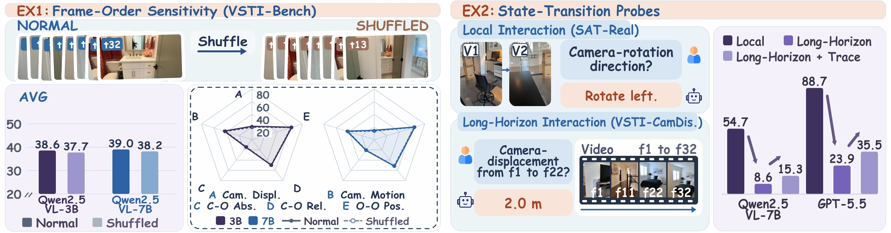
01
Little sensitivity to temporal order
Shuffling the same video frames changes Base accuracy by only 0.9 and 0.8 points for Qwen2.5-VL-3B and 7B.
02
Local evidence helps long-horizon reasoning
On camera displacement, explicit transition descriptions raise the strong VLM's score from 23.9 to 35.5.
02 / Learning through Interaction
Model the change, then integrate the trajectory
Conventional spatial QA associates isolated observations with answers. Spatial-Interactor instead learns how an action connects two observable states, then composes those local transitions into a coherent spatial state over time.
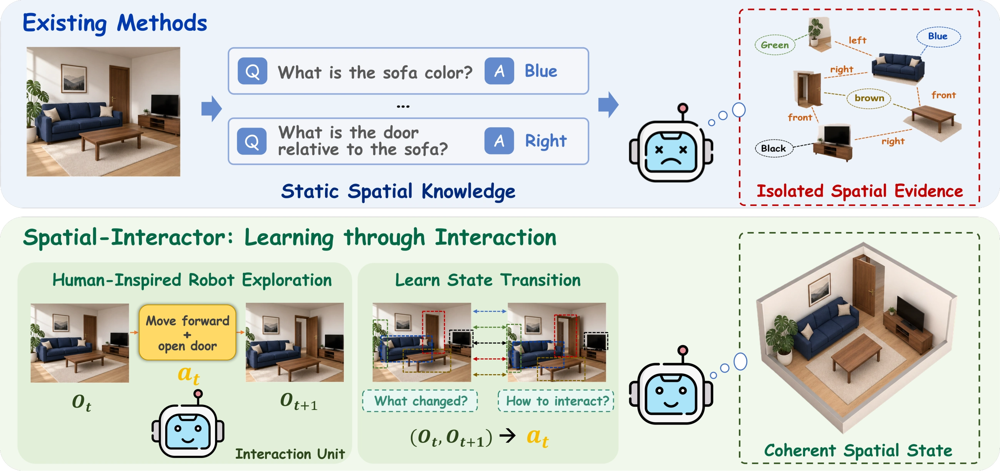
108KInteraction-derived QA pairs
3 levelsFrom local changes to global paths
4 backbonesQwen2.5-VL & Qwen3-VL
03 / LSI-108K Construction
Grounding supervision in physical interactions
Simulated environments and real trajectories supply the state changes. Geometry determines the target; deterministic templates turn it into a question and answer.
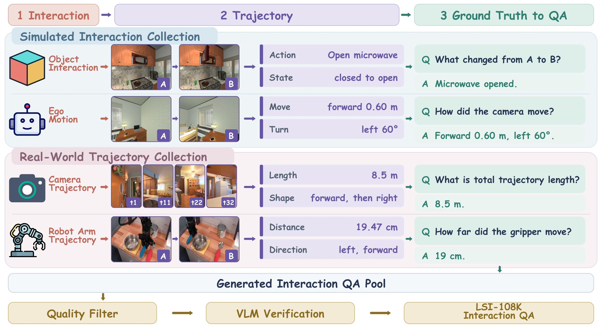
01
Collect interactions
Execute controlled actions or recover changes from camera poses, robot states, and object tracks.
02
Derive the target
Use action and geometry metadata to determine direction, magnitude, order, or trajectory structure.
03
Generate & verify
Render QA with deterministic templates, filter ambiguous transitions, and check visual answerability.
55,338 simulated42,180 real camera10,000 real robot
04 / Spatial Interaction Curriculum
From local transitions to complete trajectories
From changes in the world, to changes in the observer, to the integration of a complete path. Each question is grounded in actions, states, or geometric trajectories.
Passive world-state transitions
The world changes; the viewpoint stays approximately fixed. Learn object motion, state changes, and single- or multi-step operations.
15,109 QA pairs
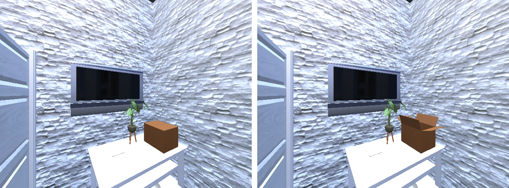
Question
What state change occurred between the two views?
Reference answer

C. An object was opened or closed.
The complete curriculum
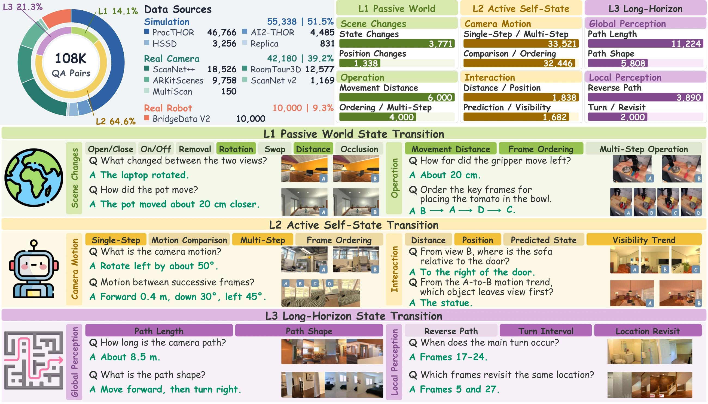
05 / Training Method
Local transition learning and long-horizon integration
Two complementary training stages connect observable physical changes to long-horizon spatial reasoning.
Stage 1 L1 + L2
Supervised Fine-Tuning
Associate differences between observations with object operations and ego-motion, learning reusable local state-transition representations.
Stage 2 L3
On-Policy Distillation
Use training-only transition descriptions to guide reasoning over complete trajectories, alongside verifiable final-answer rewards.
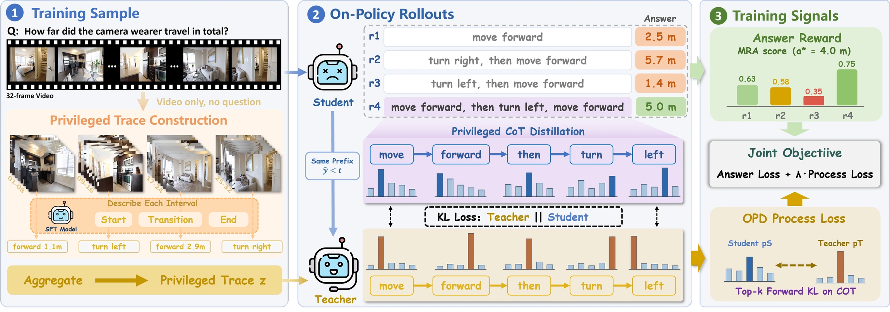
Same student prefix. The teacher reads the privileged trace; the student does not.
Reasoning-only distillation. Answer correctness is supervised by verifiable rewards.
No extra input at inference. The final model receives only the visual input and question.
06 / Experiments
Main results
Consistent improvements on video and multi-view benchmarks, with additional transfer to tasks outside the training mixture.
+16.4–25.0Overall points over Base
65.9Best reported Overall score
+4.3–10.6Cross-benchmark Overall gain
Table 2
Cross-benchmark generalization
Table 3
Training ablation
SFT
Interaction data complements spatial QA
On Qwen2.5-VL-7B, adding L1/L2 data to external-data SFT improves Overall from 56.0 to 58.4.
OPD
Process supervision supports longer horizons
Compared with matched GRPO, OPD adds 5.1 points on Route Planning and 3.1 on Camera Displacement.
07 / Analysis and Ablations
How spatial interaction changes the model
The curriculum, learning curves, and temporal diagnostics reveal complementary aspects of learning from state transitions.
01
Learning world changes, then self changes
L1 and L2 contribute differently. Training them in sequence improves all four benchmarks over Base.
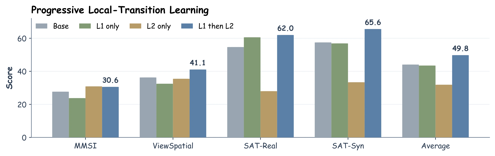

02
What changes during OPD?
Across four backbones, task reward rises, rollout diversity gradually narrows, and divergence from the privileged teacher decreases.
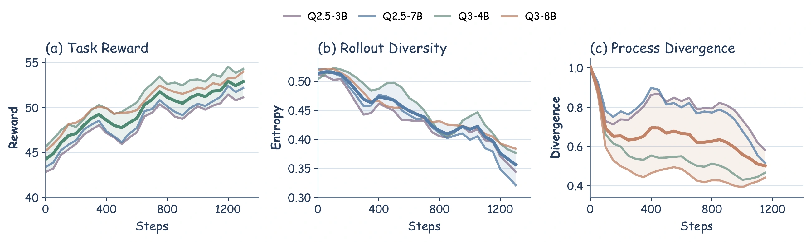

03
More observations. Better-ordered evidence.
OPD retains its advantage across frame budgets. For the frozen SFT model, ordered segment descriptions help more than shuffled descriptions.
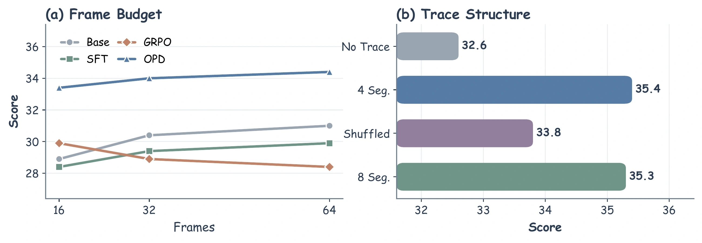

04
Temporal order becomes more important
Shuffling identical frames reduces Spatial-Interactor scores by 6.6 and 7.0 points, compared with 0.9 and 0.8 for the corresponding Base models.
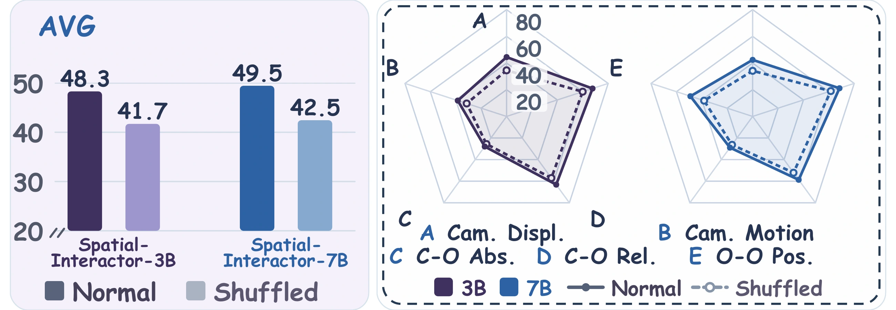

08 / Embodied Interaction
Generalization from observations to actions
When an action changes the next observation, spatial reasoning must support repeated decisions. We evaluate this setting with the Qwen2.5-VL-7B backbone.
WalkerBench
Standard-100
Success rate (%). Steps: mean executed actions per task.
ESI-Bench
8 categories · 30 matched questions each
Success rate (%). Steps: mean interaction rounds among solved episodes.
09 / Qualitative Results
Spatial evidence across views and trajectories
Two cases from the paper show how spatial evidence can be connected across viewpoints and across a longer motion sequence.
Multi-view / SAT-Real
A shared spatial anchor
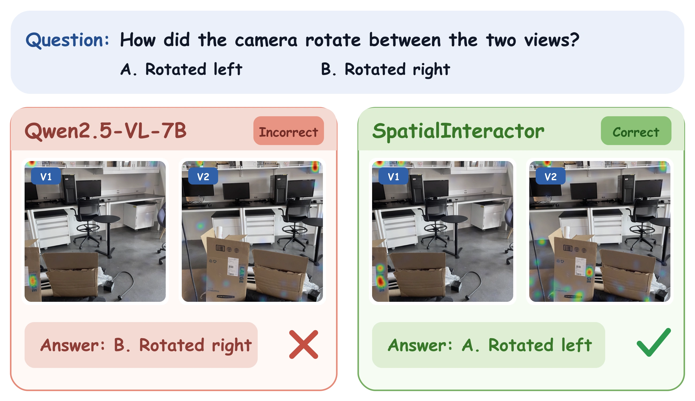

Video / VSTI-Bench
One consistent account of motion
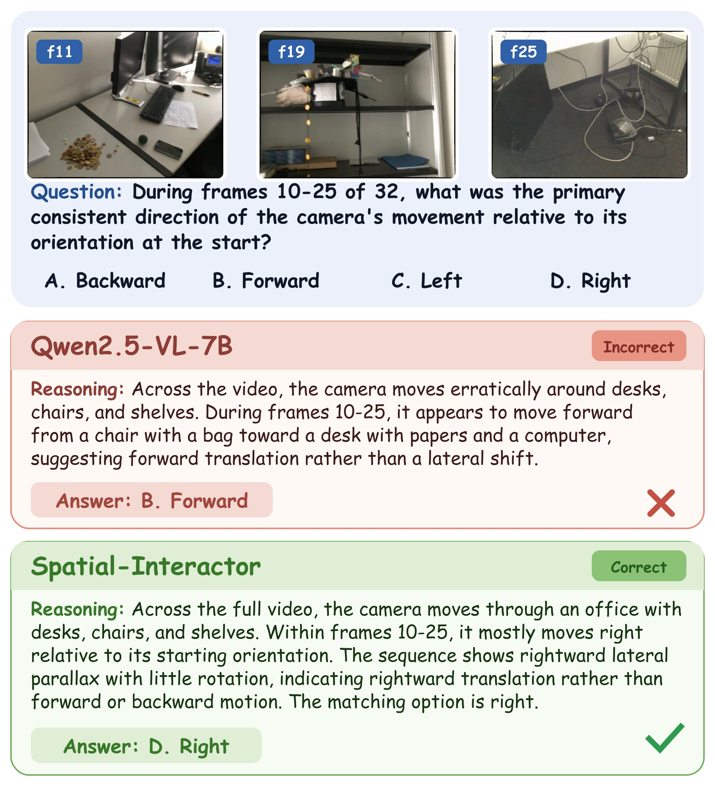

Video demonstrations
Spatial transitions in motion
Two short examples conclude the story by showing how local camera movements accumulate into a complete route and determine its global shape.
Trajectory integration
Local transitions, traveled distance, and start-to-end displacement.
0:29

Illustrative walkthrough. Scene assets: ReVSI.
Citation
Spatial-Interactor
Learning Spatial Reasoning through Interaction with the Observable Physical World
Read the paper@misc{yao2026spatialinteractor,
title = {Spatial-Interactor: Learning Spatial Reasoning
through Interaction with the Observable
Physical World},
author = {Yao, Kaixiang and Wang, Xu and Pan, Miao
and Hu, Xiyue and Wang, Weishi
and Dahlmeier, Daniel and Chen, Jintao
and Shen, Yongliang and Zhang, Xuhong
and Zhang, Wenqi},
year = {2026},
note = {Preprint}
}